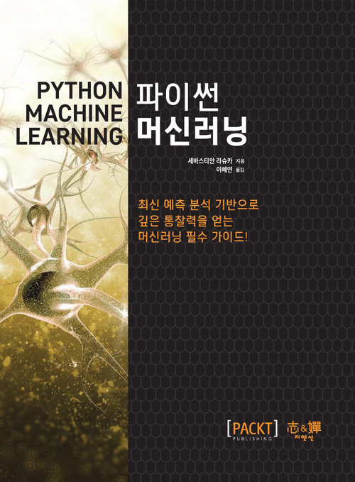
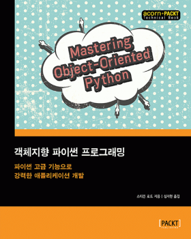

한국에서 일어나는 파이썬 관련 소식을 전합니다.
블로그
Django에 Custom 인증 붙이기 by beomi님
A 서비스와 B 서비스를 모두 운영하고 있을 때, A 서비스의 로그인과 B 서비스의 로그인을 연동하는 인증 사용자화 과정을 beomi님이 설명합니다.
Python 프로젝트에 Codecov 연동하기 by 최지훈 님
여러 커버리지 측정 분석 도구 중 하나인 Codecov를 파이썬 프로젝트와 연동하는 과정을 최지훈 님이 정리하였습니다.
프로젝트
중급 파이썬(Intermediate Python) 번역 by 땡글이
파이썬 중급 기술을 알려주는 Intermediate Python 책을 땡글이 님이 번역, 공개하였습니다.
행사
파이썬 격월 세미나 발표자 모집
2017년 3월 18일 오후 1시에 열리는 파이썬 격월 세미나에서 발표할 발표자를 모집합니다.
구인
(왓스튜디오) 듀랑고 로직 프로그래머
왓스튜디오에서 듀랑고 게임의 로직 프로그래밍을 담당할 파이썬 개발자를 구합니다.
신간
파이썬 머신러닝 by 지앤선

- 세바스티안 라슈카 지음
- 이혜연 옮김
- 정가 32,000원
- 452쪽(859g)
객체지향 파이썬 프로그래밍 by 에이콘

- 스티븐 로트 지음
- 심지현 옮김
- 정가 45,000원
- 792쪽(1505g)
함수형 파이썬 프로그래밍 by 에이콘
- 스티븐 로트 지음
- 오현석 옮김
- 정가 30,000원
- 436쪽(828g)